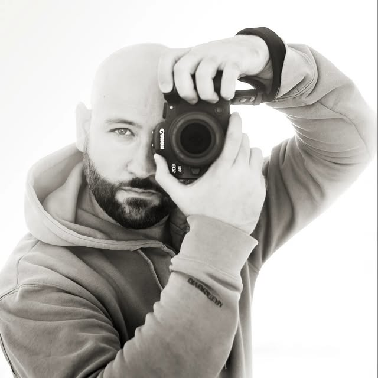
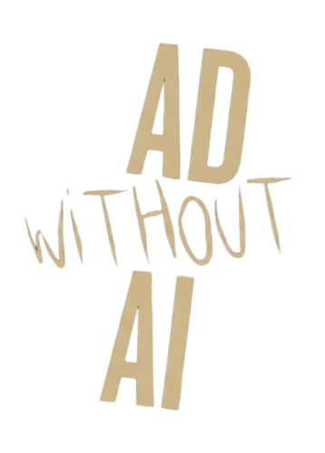

"Si sales mal, es arte. Si sales bien, soy yo."
¿Quién está detrás de la cámara?
Juan Vázquez
Fotógrafo entusiasta en Sevilla
Natural del norte pero disfrutando del sur, mi camino en la fotografía ha sido un viaje personal y autodidacta.
Mi trabajo se centra en las personas y su entorno, desde la intimidad de un retrato en un estudio hasta la espontaneidad de la fotografía de calle.
Disfruto encontrando la belleza en paisajes y rincones que pasan desapercibidos, capturando esos momentos que el tiempo intentará borrar.
"Cuando me veas tirado por el suelo no me ayudes, es que estoy encuadrando."

Compromiso ético
100% Fotografías Reales
sin procesos generativos
Metodología
Del sensor al lienzo digital. Explora mi Workflow LIBRE DE IA .
La sesión de fotos solo es el principio. Para mí, el revelado es tan importante como el disparo, es ese momento de ajustar cada detalle y crear esa atmósfera que hace que una foto cobre vida.
Reconocimientos
Premio - Concurso de fotografía de decoración navideña
GRUPO AMENABAR XXI, S.L.
Premio "Serie fotográfica" Photourban Sevilla
Agrupación Fotográfica Contraste Variable
Exposición II Bienal de flamenco
Galería de Arte ERA
Exposición Colectiva "El mundo IKEA"
IKEA Sevilla
Premio "Serie fotográfica" Photourban Sevilla
Agrupación Fotográfica Contraste Variable
Exposición ACUFER "Guarda agujas"
Centro Cultural El Casino - Utrera
Preguntas Frecuentes
¿Realizas sesiones fuera de Sevilla?
Principalmente trabajo en Sevilla y alrededores pero podría darse algún caso de ampliar horizontes si la propuesta resulta interesante.
¿Cómo sueles plantear una sesión de fotos y cómo las entregas?
Cada proyecto es único al igual que cada persona, llevar a cabo una sesión personalizada requiere de un diálogo previo donde nos enfocamos en llegar al mejor resultado. Escuchar con atención y entender qué se pretende lograr es quizá una de las partes más importantes de una sesión de fotos fructífera. Las fotografías se entregan editadas y en alta resolución mediante galería privada y encriptada en la nube, con un tiempo medio de entrega de 7 a 10 días laborables. Si decides optar por una sesión TFP tendrás acceso a un muestrario con todas las fotos donde podrás seleccionar las que más te gusten.
¿Trabajas en estudio o en exteriores?
Me adapto a la narrativa que busquemos. Puedo gestionar sesiones en estudio para retratos controlados o aprovechar la luz natural en exteriores para un estilo más libre o urbano donde se puede jugar con multitud de elementos ya que suelen ser sesiones más dinámicas.
¿Se pueden hacer sesiones de varias personas a la vez?
Es habitual hacer fotos de amigos y familiares, así que claro que es posible siempre que se avise con tiempo para poder planificar las fotografías.
Ofreces fotos a 0€ ¿Por qué regalas tu trabajo?
No regalo mi trabajo, ofrezco Sesiones Colaborativas "TFP" donde ninguna de las partes recibe una compensación económica pero sí un beneficio mutuo: Aumento de nuestro portfolio, Redes Sociales, etc. Puedes encontrar más información consultando las condiciones con las que trabajo.
¿Podríamos trabajar con otros estilos de fotorafía?
¡Claro! Siempre estoy abierto a trabajar con nuevas ideas. ¿Qué me propones?.
Puede que aún te quede alguna duda, en ese caso me puedes escribir a contacto@fotovazquez.com